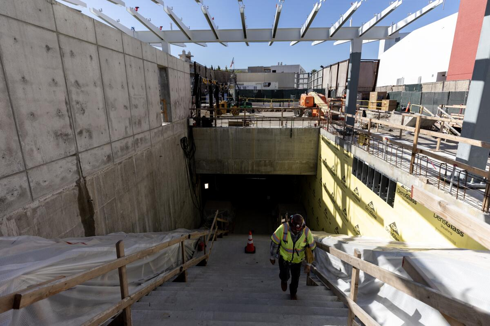
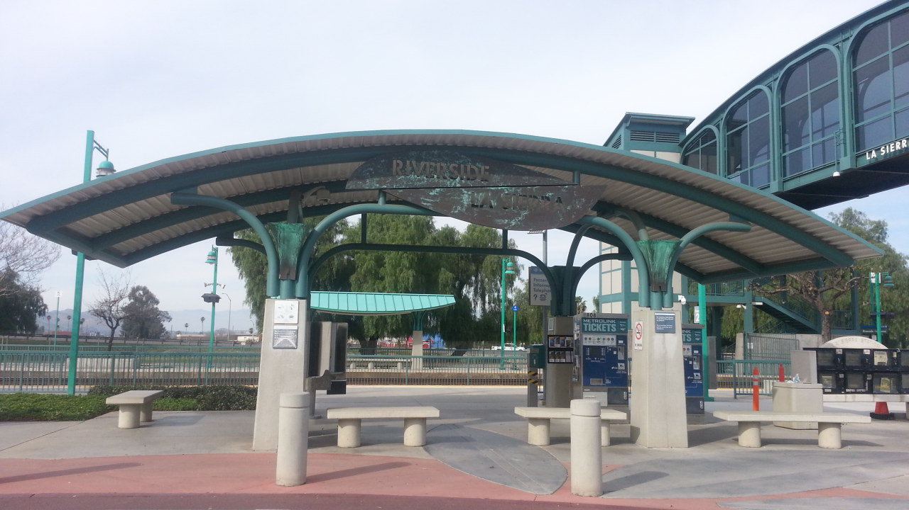
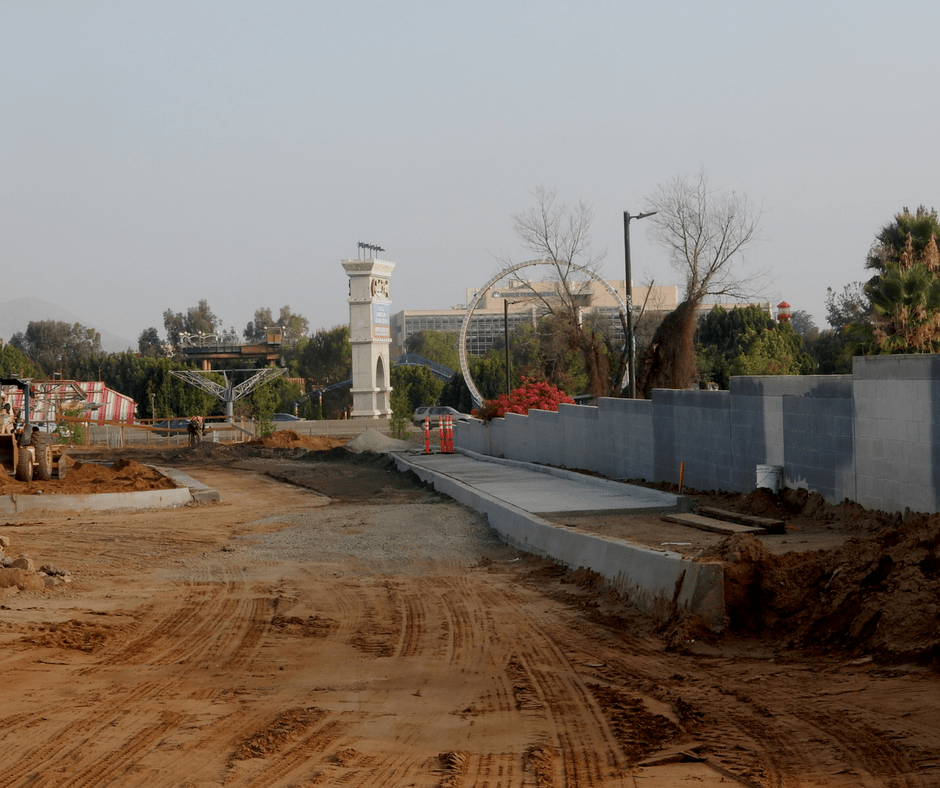

Project Details
- Category: Port / Rail / Transit Projects
- Owner: Riverside County Transportation Commission (RCTC)
- Location: Riverside, CA
- Delivery Method: Design-Bid-Build
- Status / Completion: 2017

The Riverside County Transportation Commission (RCTC) developed the La Sierra Avenue Metro Station Expansion and Improvement Project to improve transit access, increase ridership capacity, and enhance connectivity between rail and bus networks. The project aimed to modernize existing facilities, expand parking, upgrade pedestrian pathways, and improve safety and operational efficiency. This project demonstrates S2 Engineering�s ability to support complex transit station expansions in urban environments while maintaining active transit operations.
S2 Engineering provided construction management, quality assurance, and inspection services , including Resident and office engineering support for all station expansion work Verification of contractor compliance with Caltrans and RCTC standards CPM schedule review and analysis to maintain project milestones Oversight of construction activities including paving, structural improvements, and utility installation Documentation and submittal review, including RFIs, CCOs, and testing reports Coordination with multiple stakeholders, including rail operators, utility agencies, and the public
Maintained uninterrupted station operations during construction Ensured compliance with ADA and transit safety standards Streamlined reporting and project documentation to avoid delays and improve oversight Provided proactive inspection and quality control to reduce rework and ensure long-term performance
0125 Riverside La Sierra Station Paint Swatch 02 Bl

download

La Sierra Metrolink entrance

La Sierra 1